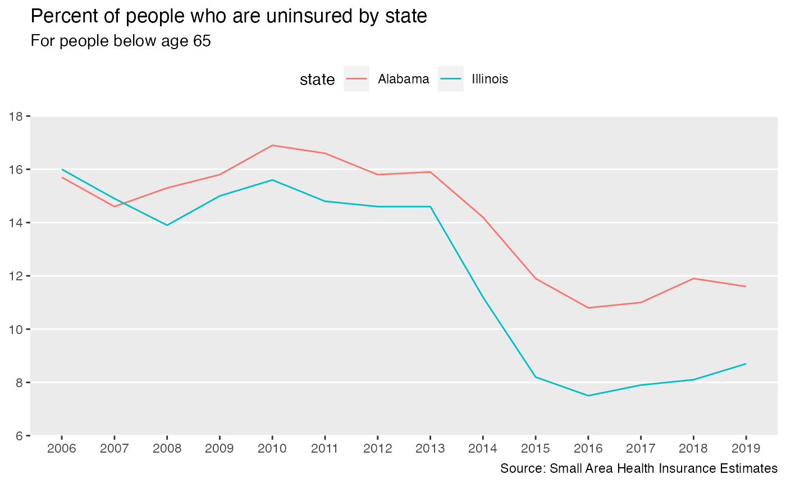

censusapi is a wrapper for the United States Census
Bureau’s APIs.
As of 2017 over 200 Census API endpoints are available, including
Decennial Census, American Community Survey, Poverty Statistics, and
Population Estimates APIs. This package is designed to let you get data
from all of those APIs using the same main
function—getCensus—and the same syntax for each
dataset.
censusapi generally uses the APIs’ original parameter
names so that users can easily transition between Census’s documentation
and examples and this package. It also includes metadata functions to
return data frames of available APIs, variables, and geographies.
This package returns the data as-is with the original variable names created by the Census Bureau and any quirks inherent in the data. Each dataset is a little different. Some are documented thoroughly, others have documentation that is sparse. Sometimes variable names change between years or geographies are added or dropped. This package can’t overcome those challenges, but tries to make it easier to get the data for use in your analysis. Make sure to thoroughly read the documentation for your dataset and see below for how to get help with Census data.
API key setup
To use the Census APIs, sign up for an API
key, which will be sent to your provided email address. You’ll need that
key to use this package. censusapi will use it by default
without any extra work on your part.
Within R, run:
# Add key to .Renviron
Sys.setenv(CENSUS_KEY=YOURKEYHERE)
# Reload .Renviron
readRenviron("~/.Renviron")
# Check to see that the expected key is output in your R console
Sys.getenv("CENSUS_KEY")Once you’ve added your census key to your system environment, censusapi will use it by default without any extra work on your part.
In some instances you might not want to put your key in your
.Renviron - for example, if you’re on a shared school computer. You can
always choose to manually set key = "YOURKEY" as an
argument in getCensus() if you prefer.
Finding your API
To get started, load the censusapi library.
The Census APIs have over 200 endpoints, covering dozens of different datasets.
To see a current table of every available endpoint, run
listCensusApis:
apis <- listCensusApis()
View(apis)This returns useful information about each endpoint, including
name, which you’ll need to make your API call.
Using getCensus
The main function in censusapi is
getCensus, which makes an API call to a given Census API
and returns a data frame of results. Each API has slightly different
parameters, but there are always a few required arguments:
-
name: the name of the API as defined by the Census, like “acs5” or “timeseries/bds/firms” -
vintage: the dataset year, generally required for non-timeseries APIs -
vars: the list of variable names to get -
region: the geography level to return, like state or county
Some APIs have additional required or optional arguments, like
time, monthly, or period. Check
the specific documentation
for your API to see what options are allowed.
Let’s walk through an example getting uninsured rates by income group using the Small Area Health Insurance Estimates API, which provides detailed annual state-level and county-level estimates of health insurance rates.
Choosing variables
censusapi includes a metadata function called
listCensusMetadata to get information about an API’s
variable options and geography options. Let’s see what variables are
available in the SAHIE API:
sahie_vars <- listCensusMetadata(
name = "timeseries/healthins/sahie",
type = "variables")
head(sahie_vars)## name
## 1 NIPR_LB90
## 2 NIPR_PT
## 3 AGECAT
## 4 NIC_PT
## 5 GEOID
## 6 STATE
## label
## 1 Number in Demographic Group for Selected Income Range, Lower Bound for 90% Confidence Interval
## 2 Number in Demographic Group for Selected Income Range, Estimate
## 3 Age Category
## 4 Number Insured, Estimate
## 5 State+County FIPS Code
## 6 State FIPS Code
## concept predicateType group limit required
## 1 Uncertainty Measure int N/A 0 <NA>
## 2 Estimate int N/A 0 <NA>
## 3 Demographic ID int N/A 6 default displayed
## 4 Estimate int N/A 0 <NA>
## 5 Uncertainty Measure int N/A 0 <NA>
## 6 Geographic ID int N/A 0 <NA>We’ll use a few of these variables to get uninsured rates by income group:
-
IPRCAT: Income Poverty Ratio Category -
IPR_DESC: Income Poverty Ratio Category Description -
PCTUI_PT: Percent Uninsured in Demographic Group for Selected Income Range, Estimate -
NAME: Name of the geography returned (e.g. state or county name)
Choosing regions
We can also use listCensusMetadata to see which
geographic levels we can get data for using the SAHIE API.
listCensusMetadata(
name = "timeseries/healthins/sahie",
type = "geography")## name geoLevelId limit referenceDate requires wildcard optionalWithWCFor
## 1 us 010 1 2015-01-01 NULL NULL <NA>
## 2 county 050 3142 2015-01-01 state state state
## 3 state 040 52 2015-01-01 NULL NULL <NA>This API has three geographic levels: us,
county within states, and state.
First, using getCensus, let’s get uninsured rate by
income group at the national level for 2018.
sahie_national <- getCensus(
name = "timeseries/healthins/sahie",
vars = c("NAME", "IPRCAT", "IPR_DESC", "PCTUI_PT"),
region = "us:*",
year = 2019)
sahie_national## us NAME IPRCAT IPR_DESC PCTUI_PT YEAR
## 1 1 United States 0 All Incomes 10.8 2019
## 2 1 United States 1 <= 200% of Poverty 18.0 2019
## 3 1 United States 2 <= 250% of Poverty 17.5 2019
## 4 1 United States 3 <= 138% of Poverty 18.1 2019
## 5 1 United States 4 <= 400% of Poverty 15.2 2019
## 6 1 United States 5 138% to 400% of Poverty 13.8 2019We can also get this data at the state level for every state by
changing region to "state:*":
sahie_states <- getCensus(
name = "timeseries/healthins/sahie",
vars = c("NAME", "IPRCAT", "IPR_DESC", "PCTUI_PT"),
region = "state:*",
year = 2019)
head(sahie_states)## state NAME IPRCAT IPR_DESC PCTUI_PT YEAR
## 1 01 Alabama 0 All Incomes 11.6 2019
## 2 01 Alabama 1 <= 200% of Poverty 18.9 2019
## 3 01 Alabama 2 <= 250% of Poverty 18.0 2019
## 4 01 Alabama 3 <= 138% of Poverty 19.9 2019
## 5 01 Alabama 4 <= 400% of Poverty 15.1 2019
## 6 01 Alabama 5 138% to 400% of Poverty 12.5 2019Finally, we can get county-level data. The geography metadata showed
that we can choose to get county-level data within states. We’ll use
region to specify county-level results and
regionin to request data for Alabama and Alaska.
sahie_counties <- getCensus(
name = "timeseries/healthins/sahie",
vars = c("NAME", "IPRCAT", "IPR_DESC", "PCTUI_PT"),
region = "county:*",
regionin = "state:01,02",
year = 2019)
head(sahie_counties, n=12L)## state county NAME IPRCAT IPR_DESC PCTUI_PT YEAR
## 1 01 001 Autauga County, AL 0 All Incomes 9.4 2019
## 2 01 001 Autauga County, AL 1 <= 200% of Poverty 17.3 2019
## 3 01 001 Autauga County, AL 2 <= 250% of Poverty 16.3 2019
## 4 01 001 Autauga County, AL 3 <= 138% of Poverty 18.5 2019
## 5 01 001 Autauga County, AL 4 <= 400% of Poverty 12.8 2019
## 6 01 001 Autauga County, AL 5 138% to 400% of Poverty 10.2 2019
## 7 01 003 Baldwin County, AL 0 All Incomes 10.9 2019
## 8 01 003 Baldwin County, AL 1 <= 200% of Poverty 20.1 2019
## 9 01 003 Baldwin County, AL 2 <= 250% of Poverty 18.7 2019
## 10 01 003 Baldwin County, AL 3 <= 138% of Poverty 21.0 2019
## 11 01 003 Baldwin County, AL 4 <= 400% of Poverty 15.2 2019
## 12 01 003 Baldwin County, AL 5 138% to 400% of Poverty 12.9 2019Because the SAHIE API is a timeseries (as indicated in its name), we
can get multiple years of data at once using the year
argument.
sahie_years <- getCensus(
name = "timeseries/healthins/sahie",
vars = c("NAME", "PCTUI_PT"),
region = "state:01,17",
year = "2006:2019")Here’s a simple chart of that yearly data using the ggplot2 package.
library(ggplot2)
ggplot(sahie_years, aes(x = YEAR, y = PCTUI_PT, group = state, color = state)) +
geom_line() +
scale_y_continuous(
breaks = seq(6, 18, 2),
limits = c(6, 18),
expand = c(0, 0)) +
theme(
legend.position = "top",
panel.grid.minor = element_blank(),
panel.grid.major.x = element_blank(),
panel.border = element_blank(),
axis.title = element_blank()) +
scale_color_discrete(
labels = c("Alabama", "Illinois"),
breaks = c("01", "17")) +
labs(
title = "Percent of people who are uninsured by state",
subtitle = "For people below age 65",
caption = "Source: Small Area Health Insurance Estimates"
)
Annotations
Some Census datasets, inclduing the American Community Survey, use annotated values. These values use numbers or symbols to indicate that the data is unavailable, has been topcoded, has an insufficient sample size, or other noteworthy characteristics. Read more from the Census Bureau on ACS annotation meanings and ACS variable types.
The censusapi package is intended to return the data
as-is so that you can receive those unaltered annotations. If you are
using data for a small geography make sure to check for values like
-666666666 or check the annotation columns for non-empty
values to exclude as needed.
As an example, we’ll get median income with associated annotations and margin of error, for three census tracts in Washington, DC — one that is available, one that is topcoded, and one that is unavailable. Notice that income is topcoded at $250,000 — meaning any tract’s income that is above that threshold is listed as $250,000. Some are not available and are listed as -666666666. You can see these annotations in the “EA” (estimate annotation) and “MA” (margin of error annotation) columns.
acs_income <- getCensus(
name = "acs/acs5",
vintage = 2020,
vars = c("B19013_001E", "B19013_001EA", "B19013_001M", "B19013_001MA"),
region = "tract:006804,007703,000903",
regionin = "county:001&state:11")
acs_income## state county tract B19013_001E B19013_001EA B19013_001M B19013_001MA
## 1 11 001 007703 46156 <NA> 24087 <NA>
## 2 11 001 000903 250001 250,000+ -333333333 ***
## 3 11 001 006804 -666666666 - -222222222 **Variable groups
For some surveys, particularly the American Community Survey and
Decennial Census, you can get many related variables at once using a
group, defined by the Census Bureau. In some other data
tools, like American FactFinder, this idea is referred to as a
table.
The American Community Survey (ACS) APIs include estimates (variable names ending in “E”), annotations, margins of error, and statistical significance, depending on the data set. Read more on ACS variable types and annotation symbol meanings on the Census website.
You can retrieve these annotation variables manually, by specifying a list of variables. We’ll get the estimate, margin of error and annotations for median household income in the past 12 months for Census tracts in Alaska.
acs_income <- getCensus(
name = "acs/acs5",
vintage = 2017,
vars = c("NAME", "B19013_001E", "B19013_001EA", "B19013_001M", "B19013_001MA"),
region = "tract:*",
regionin = "state:02")
head(acs_income)## state county tract NAME
## 1 02 068 000100 Census Tract 1, Denali Borough, Alaska
## 2 02 261 000200 Census Tract 2, Valdez-Cordova Census Area, Alaska
## 3 02 261 000300 Census Tract 3, Valdez-Cordova Census Area, Alaska
## 4 02 261 000100 Census Tract 1, Valdez-Cordova Census Area, Alaska
## 5 02 122 000200 Census Tract 2, Kenai Peninsula Borough, Alaska
## 6 02 122 000800 Census Tract 8, Kenai Peninsula Borough, Alaska
## B19013_001E B19013_001EA B19013_001M B19013_001MA
## 1 83295 <NA> 6362 <NA>
## 2 95227 <NA> 22638 <NA>
## 3 89000 <NA> 20435 <NA>
## 4 49076 <NA> 7165 <NA>
## 5 57694 <NA> 6526 <NA>
## 6 50904 <NA> 3723 <NA>You can also retrieve also estimates and annotations for a group of
variables in one command. Here’s the group call for that
same table, B19013.
# See descriptions of the variables in group B19013
group_B19013 <- listCensusMetadata(
name = "acs/acs5",
vintage = 2017,
type = "variables",
group = "B19013")
group_B19013## name
## 1 B19013_001MA
## 2 B19013_001EA
## 3 B19013_001E
## 4 B19013_001M
## label
## 1 Annotation of Margin of Error!!Median household income in the past 12 months (in 2017 inflation-adjusted dollars)
## 2 Annotation of Estimate!!Median household income in the past 12 months (in 2017 inflation-adjusted dollars)
## 3 Estimate!!Median household income in the past 12 months (in 2017 inflation-adjusted dollars)
## 4 Margin of Error!!Median household income in the past 12 months (in 2017 inflation-adjusted dollars)
## concept
## 1 MEDIAN HOUSEHOLD INCOME IN THE PAST 12 MONTHS (IN 2017 INFLATION-ADJUSTED DOLLARS)
## 2 MEDIAN HOUSEHOLD INCOME IN THE PAST 12 MONTHS (IN 2017 INFLATION-ADJUSTED DOLLARS)
## 3 MEDIAN HOUSEHOLD INCOME IN THE PAST 12 MONTHS (IN 2017 INFLATION-ADJUSTED DOLLARS)
## 4 MEDIAN HOUSEHOLD INCOME IN THE PAST 12 MONTHS (IN 2017 INFLATION-ADJUSTED DOLLARS)
## predicateType group limit predicateOnly
## 1 string B19013 0 TRUE
## 2 string B19013 0 TRUE
## 3 int B19013 0 TRUE
## 4 int B19013 0 TRUE
acs_income_group <- getCensus(
name = "acs/acs5",
vintage = 2017,
vars = c("NAME", "group(B19013)"),
region = "tract:*",
regionin = "state:02")
head(acs_income_group)## state county tract NAME
## 1 02 068 000100 Census Tract 1, Denali Borough, Alaska
## 2 02 261 000200 Census Tract 2, Valdez-Cordova Census Area, Alaska
## 3 02 261 000300 Census Tract 3, Valdez-Cordova Census Area, Alaska
## 4 02 261 000100 Census Tract 1, Valdez-Cordova Census Area, Alaska
## 5 02 122 000200 Census Tract 2, Kenai Peninsula Borough, Alaska
## 6 02 122 000800 Census Tract 8, Kenai Peninsula Borough, Alaska
## B19013_001E B19013_001EA B19013_001M B19013_001MA GEO_ID NAME_1
## 1 83295 <NA> 6362 <NA> 1400000US02068000100 NA
## 2 95227 <NA> 22638 <NA> 1400000US02261000200 NA
## 3 89000 <NA> 20435 <NA> 1400000US02261000300 NA
## 4 49076 <NA> 7165 <NA> 1400000US02261000100 NA
## 5 57694 <NA> 6526 <NA> 1400000US02122000200 NA
## 6 50904 <NA> 3723 <NA> 1400000US02122000800 NAAdvanced geographies
Some geographies, particularly Census tracts and blocks, need to be
specified within larger geographies like states and counties. This
varies by API endpoint, so make sure to read the documentation for your
specific API and run listCensusMetadata to see the
available geographies.
You may want to get get data for many geographies that require a parent geography. For example, tract-level data from the 2010 Decennial Census can only be requested from one state at a time.
In this example, we use the built in fips list of state
FIPS
codes to request tract-level data from each state and join into a
single data frame.
tracts <- NULL
for (f in fips) {
stateget <- paste("state:", f, sep="")
temp <- getCensus(
name = "dec/sf1",
vintage = 2010,
vars = "P001001",
region = "tract:*",
regionin = stateget)
tracts <- rbind(tracts, temp)
}
head(tracts)## state county tract P001001
## 1 01 001 020100 1912
## 2 01 001 020500 10766
## 3 01 001 020300 3373
## 4 01 001 020400 4386
## 5 01 001 020200 2170
## 6 01 001 020600 3668The regionin argument of getCensus can also
be used with a string of nested geographies, as shown below.
The 2010 Decennial Census summary file 1 requires you to specify a
state and county to retrieve block-level data. Use region
to request block level data, and regionin to specify the
desired state and county.
data2010 <- getCensus(
name = "dec/sf1",
vintage = 2010,
vars = "P001001",
region = "block:*",
regionin = "state:36+county:027+tract:010000")
head(data2010)## state county tract block P001001
## 1 36 027 010000 1000 31
## 2 36 027 010000 1011 17
## 3 36 027 010000 1028 41
## 4 36 027 010000 1001 0
## 5 36 027 010000 1031 0
## 6 36 027 010000 1002 4For many more examples and advanced topics check out all of the articles
Troubleshooting
The APIs contain hundreds of API endpoints and dozens of datasets, each of which work a little differently. The Census Bureau also makes frequent updates, which unfortunately are not always announced in advance. If you’re getting an error message or unexpected results, here are some things to check.
Variables
Use listCensusMetadata(type = "variables") on your API
to see the table of available variables.
- Occasionally the variable names will change with data updates or API updates. The names may be different from year to year. Capitalization may also be inconsistent between datasets or years.
- The Census APIs are case-sensitive, which means that if the variable name you want is uppercase you’ll need to write it uppercase in your request. Most of the APIs use uppercase variable names, but some use lowercase and some even use sentence case.
Geographies
Use listCensusMetadata(type = "geographies") on your
dataset to check which geographies you can use.
- Each API has its own list of valid geographies and they occasionally change as the Census Bureau makes updates. If a previously available geography isn’t available anymore, email cnmp.developers.list@census.gov detailing the issue.
- If you’re specifying a region by FIPS code, for example
state:01, make sure to use the full code, padded with 0s if necessary. The APIs did not always enforce this (previously,state:1usually worked), but now they do. See the Census reference files for valid FIPS codes.
Unexpected errors
Occasionally you might get the general error message
"There was an error while running your query. We've logged the error and we'll correct it ASAP. Sorry for the inconvenience."
This comes from the Census Bureau and could be caused by any number of
problems, including server issues. Try rerunning your API call. If that
doesn’t work and you are requesting a large amount of data, try reducing
the amount that you’re requesting, for example getting only one state at
a time. If you’re still having trouble, email census.data@census.gov. Include in your email the raw
API call that’s provided in your getCensus error message
(not your R code) so that they can try to help.
Other ways to get help
- Open a Github issue for bugs or issues with this R package.
- Join the public Census Bureau Slack channel and ask your question in the R or API rooms.
- Email the Census Bureau API team at census.data@census.gov for questions relating to the underlying data and APIs.